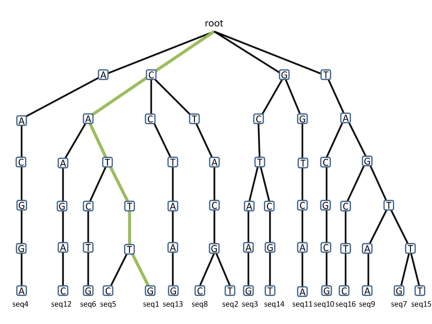

About
The trieFinder program is designed to rapidly map Digital Gene Expression (DGE) tags of various lengths to RefSeq, UniGene, and/or genomic sequences. It annotates the tags with information from the sequence files, providing output in a format that is amenable to both transcript quantification and the detection of novel transcripts.

Citing
Our paper describing our algorithm was published in BMC Bioinformatics. To cite us:BMC Bioinformatics. 2014 Oct 13;15:329. doi: 10.1186/1471-2105-15-329.
trieFinder: an efficient program for annotating Digital Gene Expression (DGE) tags.
Gabriel Renaud†, Matthew C. LaFave†, Jin Liang, Tyra G. Wolfsberg and Shawn M. Burgess
Support and contact
Please contact Gabriel Renaud (@grenaud) for further information: